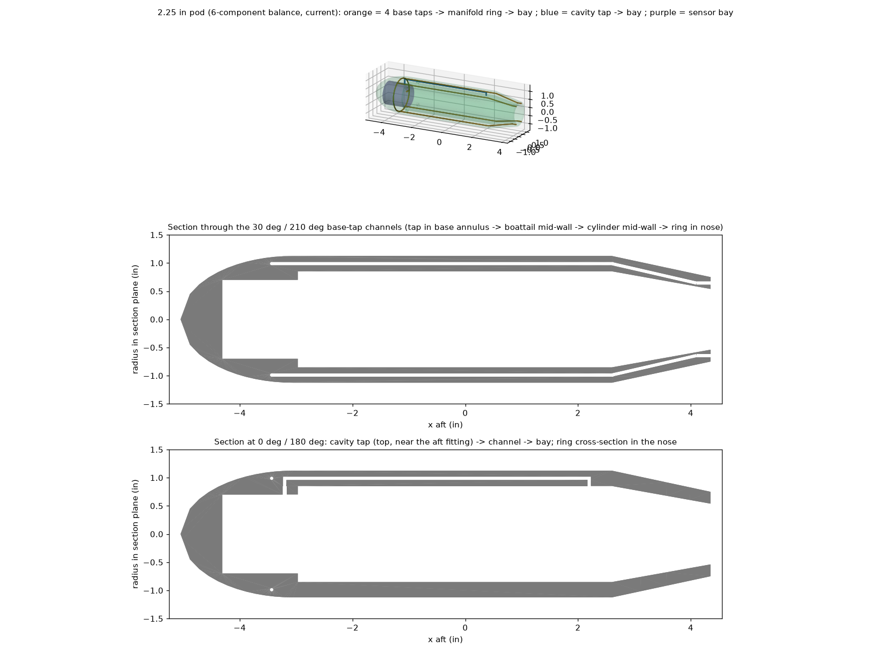

Models, pod and model interface
Models are 3D-printed. Each one is built around a standard pod that hides the balance, carries the pressure instrumentation and bolts to an aluminum puck on the balance.
Model interface
The puck (6061, Ø1.700 x 0.300 in, drawing WT-6C-002) bolts to the balance front face with 2x #10 screws and 2x 1/8 dowels. The printed pod slides over the balance and is held by 4 radial #8-32 screws through its wall into the puck, so models swap without touching the balance. A 3/16 in hole passes the pod-sensor wires.
Reference pod (2.25 in) with pressure instrumentation

- Base taps: 4x 1/16 in at 30°/150°/210°/330° (clear of the pod screws and the wing roots), 1.5 mm channels printed in the mid-wall, a manifold ring averages them.
- Cavity tap near the aft fitting, own channel. Sensor bay in the nose for two barometric boards (base, cavity) and the attitude IMU.
- Drag correction: forebody axial = measured axial + (pbase - p∞) x Abase, Abase = 0.86 in². At 100 mph a base Cp of -0.1 is worth about ΔCD 0.002 (20 counts).
- Pod base 1.50 in, sting/pod diameter ratio 0.39 (≤ 0.5 per the NASA sting-interference report); ≥ 12 in of straight sting behind the pod.
- Print standing on the base (nose up) so channels print as round vertical holes; leak-check every model.
Model guidelines
| Topic | Guideline |
|---|---|
| Material | PC-CF preferred (low creep, low moisture). PA6-CF only if dried, sealed and stored dry. PETG for quick prototypes. |
| Stiffness | 6 mm carbon tube spar in wings, or tips deflect noticeably at 100 mph. |
| Reference point | Wing quarter-chord at the BMC (x = 0). Moments are transferred to any other reference in software. |
| Size for rolling | Span ≤ 9 in for full ±90° roll; 12 in -> ±50°; 18 in -> ±25° (software-enforced). |
| Mass | Keep under ~1 lb; weight is removed by a wind-off tare at every attitude. |
| Surface | Smooth finish or trip strips: Re is only 1.9-2.7 x 10⁵. |
| Keep-outs | Do not drill or bolt into the pod wall at the tap-channel angles (30/150/210/330°). |
The pod is 3D printed, so it has no machining drawing: the STEP file is the print file (export it to STL and print it; print it standing on its base, nose up, so the 0.060 in tap channels print as vertical round holes; no supports inside them). CAD: pod_reference_2.25in_printed.step, model_puck_6061.step.